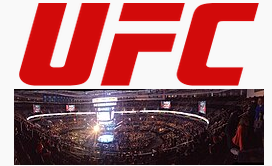

აბრევიატურა: UFC შეიქმნა: 12 ნოემბერი, 1993; 32 წლის წინ ტიპი: შერეული საბრძოლო ხელოვნების ორგანიზაცია და საწარმო შტაბ-ბინა: ლას-ვეგასი, ნევადა, აშშ მდებარეობა: საერთაშორისო მნიშვნელოვანი პირები: დანა უაითი (პრეზიდენტი და აღმასრულებელი დირექტორი) დამფუძნებლები: არტ დეივი, რორიონ გრეისი და ბობ მეიროვიცი ქვეყანა: აშშ კავშირები: Copyright Alliance[1]

Ultimate Fighting Championship (ქართ. აბსოლუტური საბრძოლო ჩემპიონატი) — ამერიკული შერეული საბრძოლო
ხელოვნების ორგანიზაციაა, რომლის სათაო ოფისი ლას-ვეგასში, ნევადაში მდებარეობს. აბსოლუტური საბრძოლო ჩემპიონატი
(UFC) დღესდღეობით ყველაზე დიდი და ცნობილი ორგანიზაციაა, რომელშიც 578-ზე მეტი მებრძოლი 11 წონით კატეგორიაში
(რვა კაცთა შორის და სამი ქალთა შორის) ასპარეზობს. ორგანიზაცია მსოფლიოს მასშტაბით ატარებს ღონისძიებებს შერეული
საბრძოლო ხელოვნების ერთიანი წესების შესაბამისად. ორგანიზაციამ, 2025 წლის 23 აგვისტოს მონაცემებით 745 ღონისძიება
ჩაატარა. დანა უაითი აბსოლუტური საბრძოლო ორგანიზაციის პრეზიდენტი წლიდან არის, 2023 წელს კი აღმასრულებელი
დირექტორიც გახდა.
ორგანიზაცია 1993 წელს ბიზნესმენმა არტ დეივიმ და ბრაზილიელმა საბრძოლო ხელოვნების ოსტატმა რორიონ გრეისმა დააარსეს.
პირველი ღონისძიება კი იმავე წელს კოლორადოს შტატის ქალაქ დენვერში ჩატარდა. შეჯიბრების თავდაპირველი იდეა იყო საუკეთესო
საბრძოლო ხელოვნების გამოვლენა, თითო საბრძოლო ხელოვნებიდან ერთი წარმომადგენელი იღებდა მონაწილეობას, იყო წესების
მინიმალური შეზღუდვა და არ არსებობდა არანაირი წონითი კატეგორია. თანდათანობით ორგანიზაციამ წესებში დაამატა მრავალი
შეზღუდვა, შემოიღო წონითი კატეგორიები, მებრძოლებს კი უწევდათ რამდენიმე საბრძლო ხელოვნების გაერთიანება, რამაც
ჩამოაყალიბა თანამედროვე შერეული საბრძოლო ხელოვნება როგორც სპორტი.
თავდაპირველად, აბსოლუტური საბრძოლო ჩემპიონატი „Semaphore Entertainment Group“-ის საკუთრება იყო, თუმცა 2001
წელს ორგანიზაციის მფლობელი შეიცვალა, როდესაც ის ფრენკ და ლორენცო ფერტიტამ შეიძინეს და პრეზიდენტად
დანა უაითი დანიშნეს. კომპანია გლობალურად გაფართოვდა, ღონისძიებები ჩრდილოეთ ამერიკაში, ევროპაში,
აზიასა და ავსტრალიაში გაიმართა და ფართოდ გაშუქდა სპორტული მედიის მიერ.